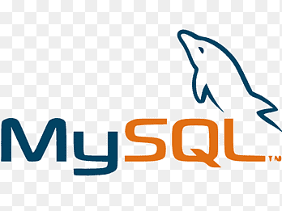
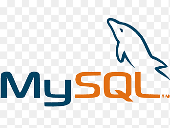

La cybersécurité en développement est essentielle pour protéger les applications contre les menaces potentielles et garantir la sécurité des données. Voici quelques principes de base :
1. Sécurité dès la conception
Intégrer la sécurité dès le début du projet, en identifiant les risques et en mettant en place des mesures de protection dès la phase de conception.
2. Gestion des entrées et des sorties
Valider toutes les entrées utilisateur pour éviter les injections malveillantes et protéger contre les attaques telles que les injections SQL et les XSS.
3. Cryptage des données sensibles
Utiliser des méthodes de chiffrement robustes pour protéger les informations sensibles en transit et au repos.
4. Gestion des identités et des accès
Mettre en place des systèmes d'authentification forte et de gestion des accès selon le principe du moindre privilège.
5. Protection contre les attaques courantes
Utiliser des outils et des pratiques pour prévenir les attaques courantes comme les injections SQL, les attaques XSS, et les CSRF.
6. Tests de sécurité continus
Effectuer des tests de sécurité réguliers pour identifier et corriger les vulnérabilités dans le code et les dépendances tierces.
7. Mise à jour et gestion des vulnérabilités
Mettre en place une gestion des vulnérabilités et appliquer régulièrement des patches de sécurité pour réduire les risques.
8. Réponse aux incidents de sécurité
Préparer un plan de gestion des incidents pour réagir rapidement en cas de cyberattaque.


 
